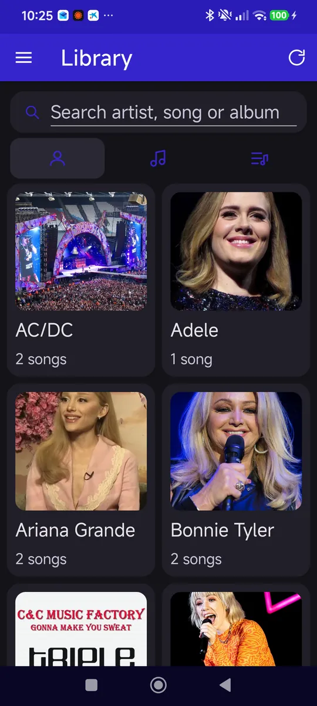
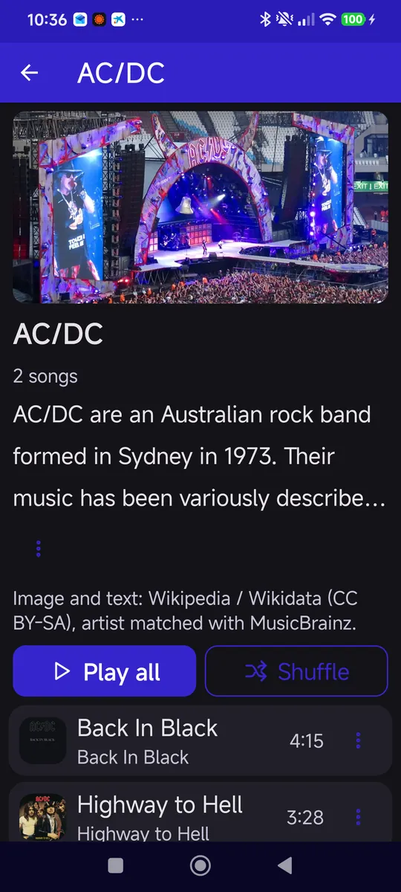
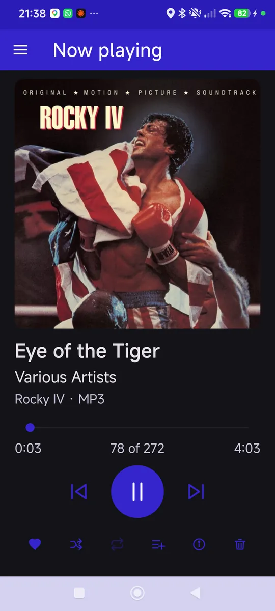
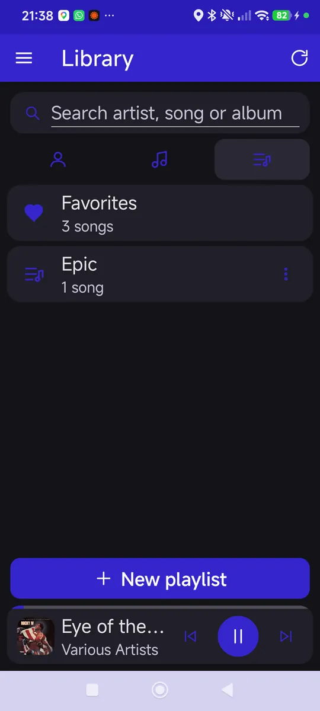

Soporte · Music Player
Cómo funciona Music Player, pantalla a pantalla, y qué hace cada opción.
En esta guía




Mantén pulsada una canción en Canciones, en un grupo o en una lista. Aparece una barra con el recuento («N seleccionadas») y los botones:
Biblioteca
Información en línea
Android Auto
Idioma
Al arrancar, si hay una versión más reciente aparece Actualización disponible («Está disponible la versión X. Tienes la Y. ¿Quieres abrir la página de descarga?»): Abrir o Más tarde.
Aún no has dado permiso de acceso a la música. Abre la aplicación en el móvil (o pulsa Abrir en el móvil en el coche) y concede el acceso; la biblioteca del coche se rellena sola al momento.
Si instalaste la aplicación desde un archivo y no desde Google Play, Android Auto la oculta: activa las opciones de desarrollador de Android Auto y marca «Unknown sources» (orígenes desconocidos).
Pulsa Volver a explorar el dispositivo y, si siguen faltando (por ejemplo, música en la tarjeta), Configuración › Buscar en todo el móvil. Si son grabaciones, podcasts o audiolibros, activa Incluir todo el audio.
Usa Configuración › Releer etiquetas para rellenar lo que falte desde los ficheros. Para una canción concreta, Editar la información desde su menú; para un grupo entero, Renombrar grupo en su pantalla.
Pulsa Configuración › Buscar carátulas: usa la imagen que lleva dentro el fichero o el cover.jpg de su carpeta. También puedes poner una imagen a mano desde Editar la información › Imagen.
La búsqueda en línea viene apagada. Actívala en Configuración › Buscar fotos y biografías de los grupos (necesita conexión). Si un grupo no aparece, pulsa Actualizar información en su pantalla.
Music Player no descarga letras: solo muestra la que trae el propio fichero o un .lrc con el mismo nombre en la misma carpeta.
«Eliminar del dispositivo» borra el fichero del móvil y no se puede deshacer. Si solo querías sacarla de una lista, usa Quitar de esta lista.
Abre una incidencia en GitHub contando qué te pasa y con qué versión y dispositivo.